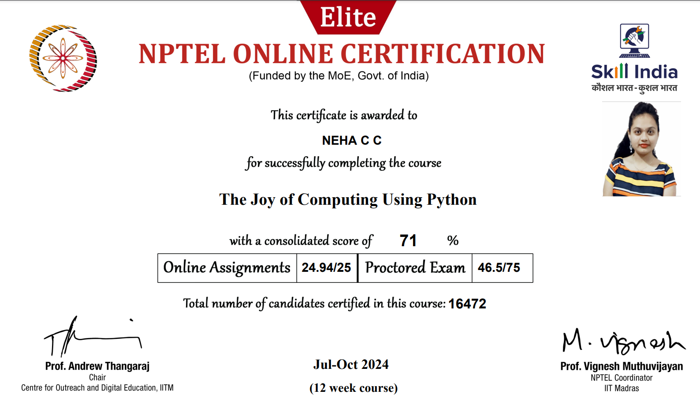

My Certificates


Certificate 2
The Joy of Computing with Python" is a valuable accomplishment, especially for beginners who want to get introduced to programming concepts and Python. The course is typically designed for students and professionals who have little or no prior experience with coding and provides an introduction to the fundamentals of computing using Python.

Certificate 3
Completing a Machine Learning Internship is a significant step in gaining hands-on experience in the field of machine learning (ML) and applying theoretical knowledge to real-world problems. An internship typically helps you gain practical skills, build a portfolio, and expand your professional network